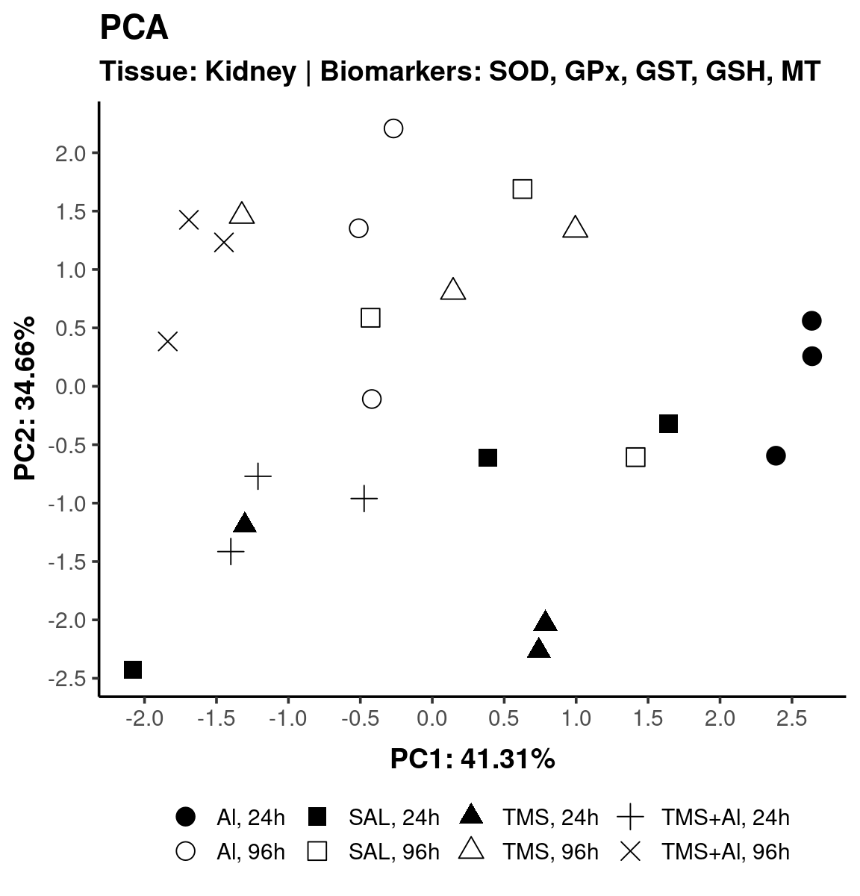
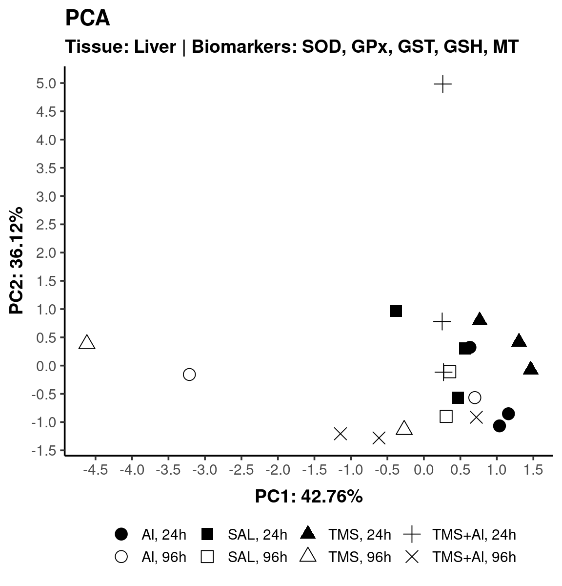
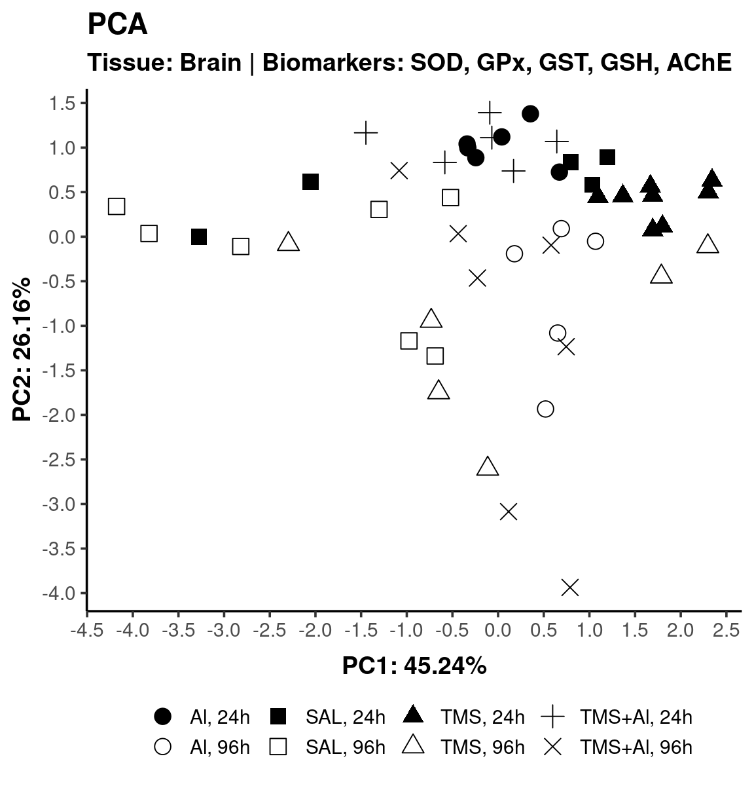
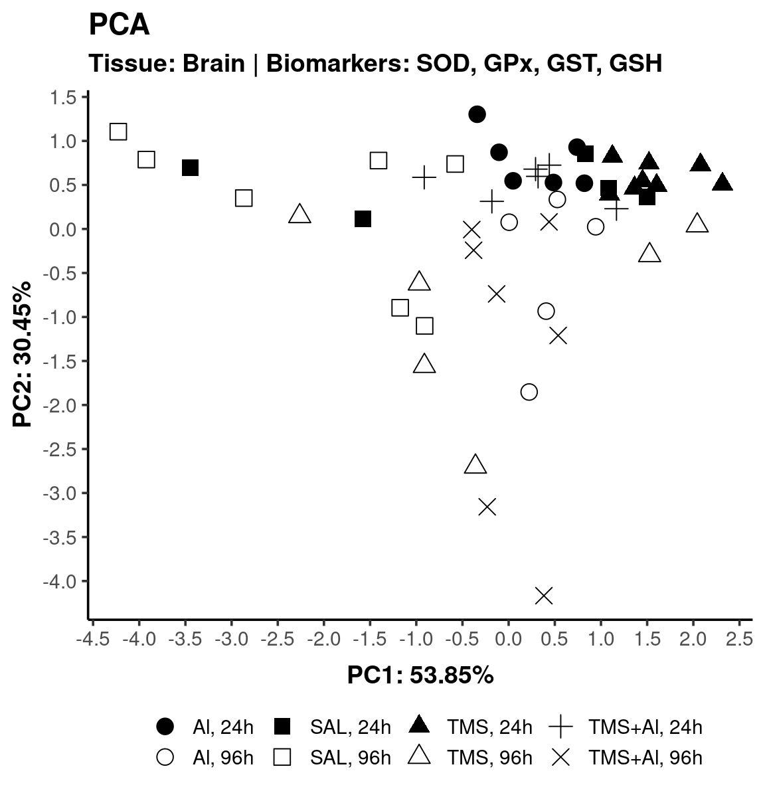
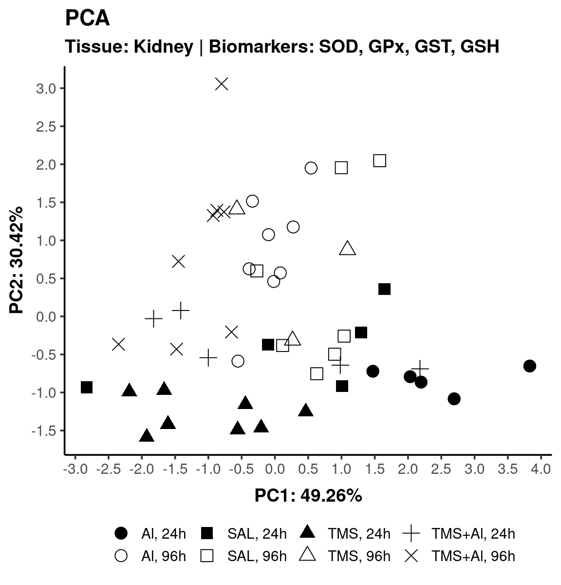
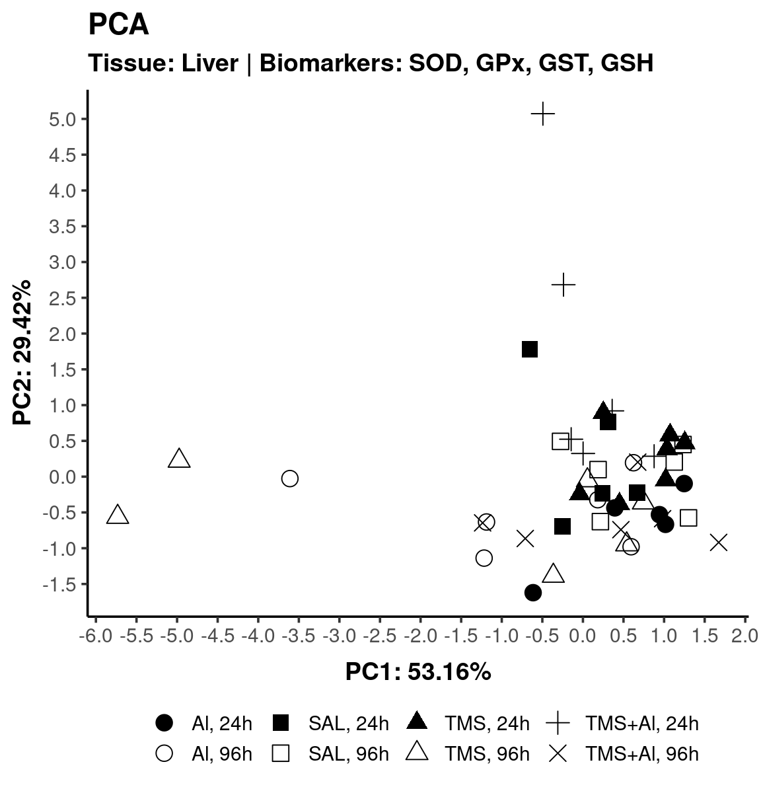

PCA
Maria Eduarda Galiciolli, Sabrina Calado,
Cláudia Sirlene Oliveira, Izonete Guiloski e Henrique Laureano
Last modification on 2022-08-16 15:21:41
To compute a Principal Component Analysis (PCA) (Mardia, Kent, and Bibby 1979; Venables and Ripley 2002) we can’t have empty cells in the database. Thus, to use all biomarkers, we split the whole data into three datasets, and for each dataset we perform an analysis per tissue.
SOD, GPx, GST, GSH, MT
With these five biomarkers, we have complete samples (no empty cells) with the following sizes per tissue.
$Kidney
[1] 24
$Liver
[1] 21Since we have five biomarkers (possible dependents - correlation different from zero) we can obtain five (independent) principal components (PCs). The first one, alone, explains around 40% of all variation derived from the five biomarkers. The second PC adds by itself more (around) 35% of explanation. Thus, with the first two PCs, we explain around 75% of all variation generated by the five biomarkers (for each/per tissue).
$Kidney
PC1 PC2 PC3 PC4 PC5
Proportion of Variance 0.41313 0.34656 0.12481 0.08145 0.03406
Cumulative Proportion 0.41313 0.75968 0.88449 0.96594 1.00000
$Liver
PC1 PC2 PC3 PC4 PC5
Proportion of Variance 0.42759 0.36121 0.11076 0.07827 0.02217
Cumulative Proportion 0.42759 0.78880 0.89956 0.97783 1.00000Kidney

Liver

SOD, GPx, GST, GSH, AChE
With these five biomarkers, we have a complete sample (no empty cells) of size:
$Brain
[1] 50Just the first PC explains 45% of all variation. The second PC adds more 26% of explanation. With the first two PCs, we explain 71% of all variation.
$Brain
PC1 PC2 PC3 PC4 PC5
Proportion of Variance 0.45239 0.26161 0.16766 0.08425 0.0341
Cumulative Proportion 0.45239 0.71400 0.88165 0.96590 1.0000Brain

SOD, GPx, GST, GSH
With these four biomarkers, we have complete samples (no empty cells) with the following sizes.
$Brain
[1] 50
$Kidney
[1] 49
$Liver
[1] 47Just the first PC explains around 50% of all variation. The second PC adds more (around) 30% of explanation. With the first two PCs, we explain around 80% of all variation (per tissue).
$Brain
PC1 PC2 PC3 PC4
Proportion of Variance 0.53854 0.30450 0.10862 0.04834
Cumulative Proportion 0.53854 0.84305 0.95166 1.00000
$Kidney
PC1 PC2 PC3 PC4
Proportion of Variance 0.49265 0.30419 0.13658 0.06659
Cumulative Proportion 0.49265 0.79683 0.93341 1.00000
$Liver
PC1 PC2 PC3 PC4
Proportion of Variance 0.53162 0.29420 0.13319 0.041
Cumulative Proportion 0.53162 0.82581 0.95900 1.000Brain

Kidney

Liver

References
The analysis was performed with the R (R Core Team 2022) language and environment for statistical computing. The following R packages were used: {dplyr} (Wickham et al. 2022), {tidyr} (Wickham and Girlich 2022) and {ggplot2} (Wickham 2016).